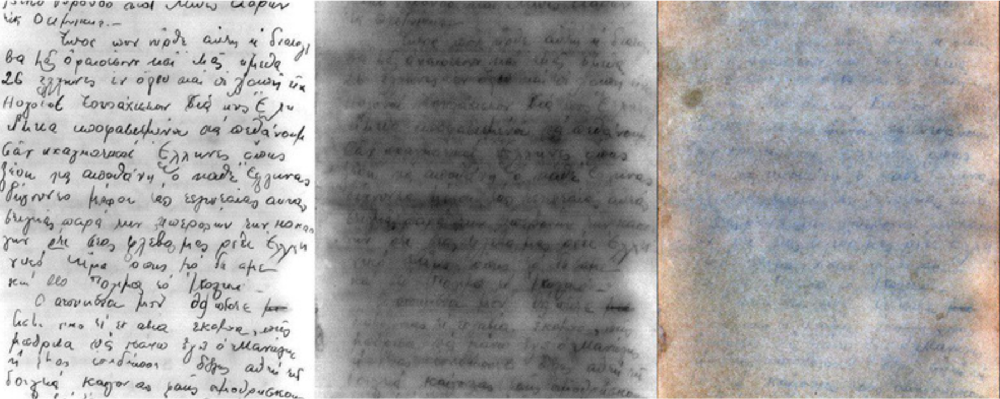
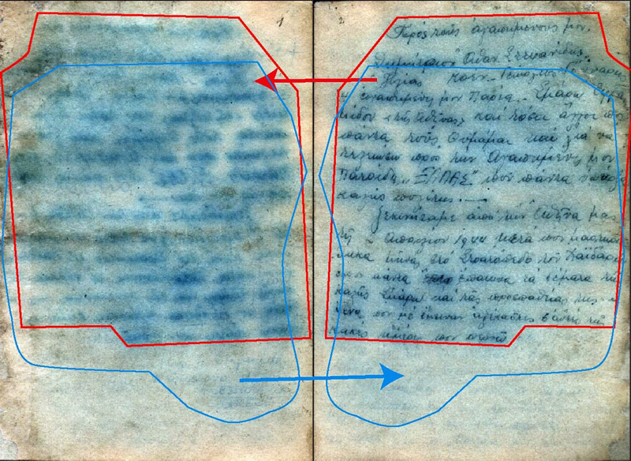
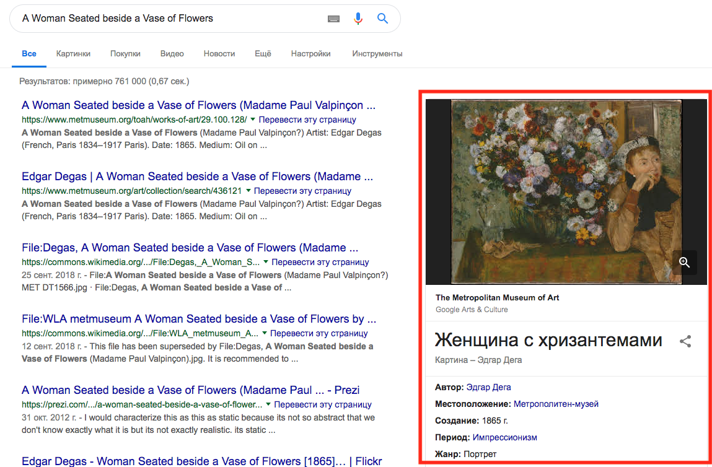

Оживление вокруг Digital Humanities в русскоязычном пространстве уже невозможно не замечать: дискуссии в телеграме, бурление соцсетей, анонсы конференций, новые магистратуры… Так что Вестник DH спешно выходит из зимней спячки. К выходу нашего круглого 10-го номера мы оживили сайт — впервые все выпуски Вестника доступны по одной короткой ссылке.
Начнем с анонсов, ибо их много:
22 февраля в Центре цифровых гуманитарных исследований НИУ ВШЭ доклад о расшифровке важнейших документов истории Холокоста — рукописей членов еврейской зондеркоммандо в Аушвице-Биркенау. Рукописи, найденные в земле и пепле, читают с помощью рентгена, магнитно-резонансная томографии, мультиспектральной съемки и сложной цифровой обработки изображений.
В центре доклада — история 12-страничной рукописи греческого еврея Марселя Наджари, пролежавшей в земле рядом с руинами одного из крематориев 36 лет. IT-энтузиаст из Тулы Александр Никитяев сумел разложить цифровые сканы рукописи на цветовые слои таким образом, что из нечитаемых пятен проступили контрастные буквы.
Одно из самых впечатляющих решений в этой работе — электронная «компенсация» чернильных потеков на основе их отражения на соседней странице рукописи. В результате исследователям удалось прочесть в 4 раза больше, чем было различимо раньше.
Докладчики — Александр Никитяев и профессор школы филологии Павел Полян, автор книги «Свитки из пепла».
26-27 февраля — межкампусная конференция по Digital Humanities в Вышке. Это внутривышкинский обзор проектов и исследований — попытка связать атомизированные кучки DH-исследователей хотя бы внутри одного университета. Но зайти послушать может любой желающий.
2 марта — конференция по цифровым гуманитарным исследованиям в Яндексе — «Data & Science: гуманитарные науки». Среди прочего ожидается выступление Льва Мановича с рассказом о его новом проекте Elsewhere, посвященном исследованию городской активности по всему миру. Еще в программе — лекции о Data Science в истории, филологии и социальных науках, а также применение нейросетей для порождения стихов и исследования поэзии средневекового Китая. Регистрация открыта!
C 14 февраля открыто голосование за номинантов на Digital Humanities Awards. Награда вручается DH-проектам в шести номинациях: лучший DH-инструмент/сервис, лучшая визуализация, лучшее развлекательное применение DH, лучшая демонстрация ошибки, лучший пример вовлечения. Проголосовать может любой (даже ваша мама) до 3 марта. В числе номинантов два русских проекта: «Studying Digital Humanities» и «Системный Блокъ»
22 июня в Университете ИТМО в Санкт-Петербурге пройдет научный семинар «Цифровая гуманитаристика в науковедческих исследованиях» (Digital Humanities in History of Science, DHHS-2019). Семинар станет частью конференции «Интернет и современное общество» (IMS-2019). Подать заявку на участие можно до 1 марта.
Перед семинаром там же будет еще два события, близких к DH:
Нью-Йоркский Метрополитен-музей (The Metropolitan Museum of Art) в конце прошлого года запустил новый открытый API для своих экспонатов. Теперь любой желающий может встроить изображения из гигантской (406 тыс. изображений, 205 тыс. экспонатов) коллекции в свой веб-сервис.
Кроме того, экспонаты стали частью сервиса Google Arts & Culture — специализированного поисковика по произведениями искусства. За предыдущие 7 лет туда было вручную добавлено несколько сотен оцифрованных экспонатов Метрополитен — теперь массово залиты все 205 тысяч.
Представители Метрополитен прямо говорят о том, что такая открытость приведет к снижению посещаемости сайта музея. Но это их не пугает: открывая доступ к экспонатам, музей отказывается от оценки результатов своей работы через трафик — их миссия в том, чтобы человек и произведение искусства встретились. Благодаря открытому API эта встреча теперь может произойти где угодно.
Появился обновленный сайт аннотированного корпус русской детской литературы. Кстати, подробнее узнать о корпусе и пообщаться с его создателями можно будет как раз на межкампусной DH-конференции Вышки 26-27 февраля.